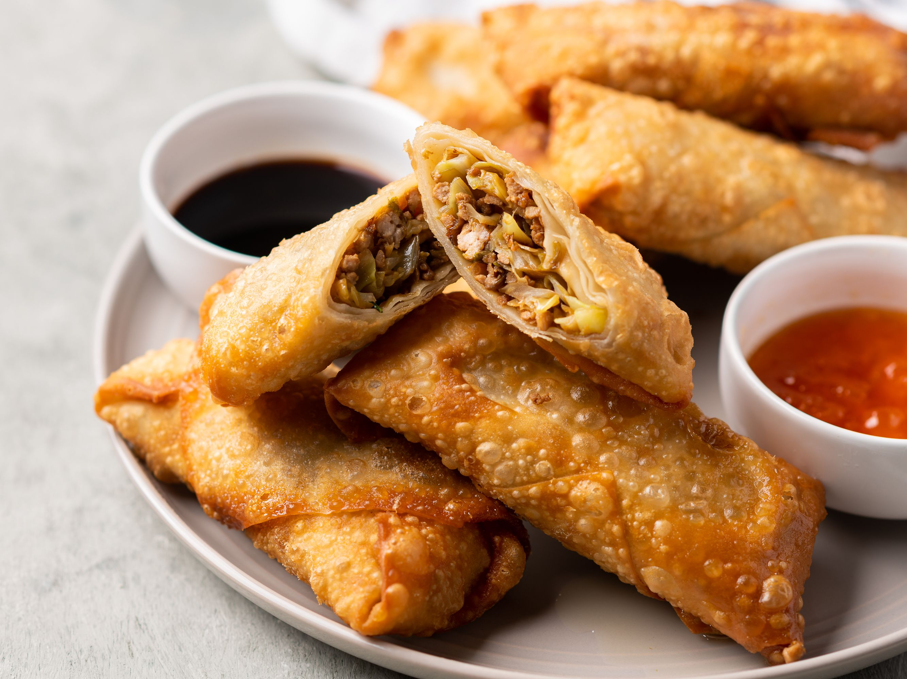

Eggroll

A simple guide on how to make eggrolls!
Egg rolls are a variety of deep-fried appetizers served in American Chinese restaurants. An egg roll is a cylindrical,
savory roll with shredded cabbage, chopped pork, and other fillings inside a thickly-wrapped wheat flour skin, which is fried in hot oil.
It consists of a thick, crispy wheat flour skin filled with shredded cabbage, pork, and other ingredients.
Egg rolls are fried in hot oil, served warm, and usually dipped in duck sauce or soy sauce.
ingredients
- 4 teaspoons vegetable oil
- 3 eggs, beaten
- 1 medium head cabbage, finely shredded
- ½ carrot, julienned
- 1 (8 ounce) can shredded bamboo shoots
- 1 cup dried, shredded wood ear mushroom, rehydrated
- 1 pound Chinese barbequed or roasted pork, cut into matchsticks
- 2 green onions, thinly sliced
- 2 ½ teaspoons soy sauce
- 1 teaspoon salt
- 1 teaspoon sugar
- ½ teaspoon monosodium glutamate (MSG)
- 1 (14 ounce) package egg roll wrappers
- 1 egg white, beaten
- 4 cups oil for frying, or as needed
Steps
- Heat 1 teaspoon vegetable oil in a wok or large skillet over medium heat. Pour in beaten eggs and cook, without stirring,
until firmed. Flip the eggs over and cook for an additional 20 seconds to firm the other side. Set egg pancake aside to cool, then slice into thin strips.
- Heat the remaining vegetable oil in a wok or large skillet over high heat. Stir in cabbage and carrot; cook for 2 minutes to wilt.
Add bamboo, mushroom, pork, green onions, soy sauce, salt, sugar, and MSG; continue cooking until the vegetables soften, about 6 minutes.
Stir in sliced egg, then spread mixture out onto a pan, and refrigerate until cold, about 1 hour.
- To assemble the egg rolls, place a wrapper onto your work surface with one corner pointing towards you. Place about 3 tablespoons of cooled filling
in a heap onto the bottom third of the wrapper. Brush a little beaten egg white onto the top two edges of the wrapper, then fold the bottom corner over
the filling and roll firmly to the halfway point. Fold the left and right sides snugly over the egg roll, then continue rolling until the top corners
seal the egg roll with the egg white. Repeat with remaining egg roll wrappers, covering finished egg rolls with plastic wrap to keep from drying out.
- Heat about 6-inches of oil in a wok or deep-fryer to 350 degrees F (175 degrees C).
- Fry egg rolls 3 or 4 at a time until golden brown, 5 to 7 minutes. Drain on paper towels.